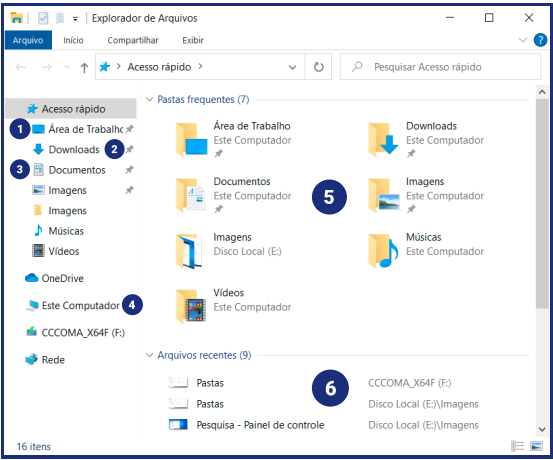
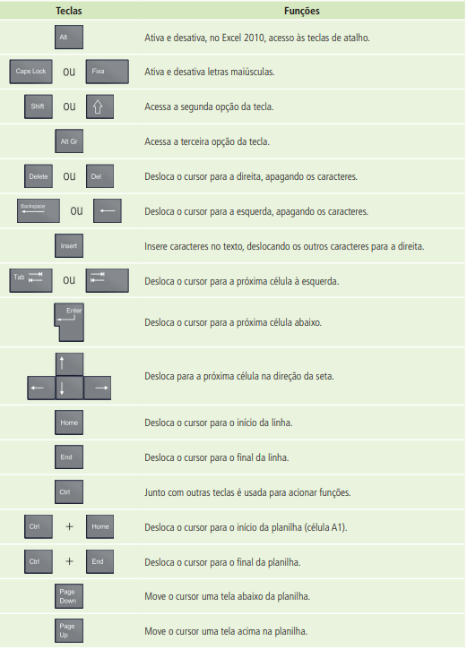

Conhecendo o Explorador de Arquivos

Fonte: Apostila "Informática Básica para Estudo Online" - Instituto Federal de Goiás
- Área de Trabalho: pasta que contém os arquivos e atalhos da área detrabalho.
- Downloads: pasta em que são salvos os arquivos e programas baixadosda internet. Por padrão, os navegadores salvam os downloads nessa pasta!
- Documentos: é comum salvar arquivos pessoais na pasta Documentos. Você pode criar subpastas para dividir melhor seus arquivos.
- Este computador: neste espaço você terá acesso aos discos rígidos (unidades), partições, disco removível (CD/DVD), pendrives e outros.
- Pastas frequentes: espaço onde são mostradas as principais pastas e as mais acessadas.
- Arquivos recentes: apresenta os atalhos dos últimos arquivos criados, editados ou baixados pelo usuário
Criando pastas e subpastas
📂 Criando uma pasta
- Acesse a página documentos
- Clique em um local vazio com o botão direito do mouse > Novo > Nova pasta
- Digite o nome da nova pasta e pressione a tecla "Enter"
📂 Criando uma subpasta
- Dê dois cliques sob a pasta recém-criada para abri-la
- Dentro da pasta, repita o mesmo processo (Botão direito > Novo > Nova pasta)
- Dê um nome a subpasta e pressione a tecla "Enter"
Nomeação e organização lógica de arquivos
Por que isso é importante? Organizar arquivos corretamente economiza tempo e evita confusão. Com nomes claros e pastas bem definidas, você sabe onde está cada documento, foto ou projeto.
📌 Boas Práticas:
- ▶ Evite nomes genéricos como "arquivo1" ou "documento2"
- ▶ Utilize nomes curtos, descritivos e com datas, se necessário.
- ✅ Use padrões consistentes, como:
- ▶ Separadores: Use underline (_) ou hífen (-) em vez de espaços.
- ▶ Datas: Use o formato AAAA-MM-DD
- ▶ Evite acentos e caracteres especiais (ç, ã, é, !, ?, etc.)
- 📁 Crie uma hierarquia simples e lógica, por exemplo:
- ▶ Curso de Informática / Aulas / Aula_01_Introducao.pdf
- ▶ Curso de informática / Exercicios / Exercicio_Aula_01.pdf
Exibição: detalhes, ícones, listas
Modos de Exibição são formas de ver os arquivos e pastas no computador. Você pode escolher o que for mais prático para você, dependendo da tarefa.
🔎 Principais Modos de Exibição:
- ▶ Ícones grandes: Mostra as miniaturas do arquivo (indicado para fotos e vídeos)
- ▶ Lista: Mostra nomes em uma lista simples (indicado para pastas com muitos arquivos)
- ▶ Detalhes: Mostra nome, tipo, tamanho, data de modificação (melhor para organizar e encontrar arquivos)
🔎 Como alterar o modo de exibição?
- ▶ Abrar uma pasta qualquer
- ▶ No menu superior (Windows 10 e 11), clique em "Exibir"
- ▶ Escolha o modo de exibição
Criar e excluir atalhos
Atalho é um ícone ou link que serve para acessar rapidamente um programa, pasta ou arquivo no seu computador. Eles são úteis porque você pode acessar o item desejado sem precisar navegar por várias pastas.
📎 Como criar um atalho?
- ▶ Clique com o botão direito na área de trabalho (ou em outra pasta).
- ▶ Selecione Novo e depois Atalho.
- ▶ Na janela que aparecer, clique em Procurar e localize o programa (por exemplo, o Chrome, Word, etc.).
- ▶ Selecione o programa e clique em OK.
- ▶ Dê um nome ao atalho (por exemplo, "Google Chrome") e clique em Concluir.
Criando atalho para um Programa
- ▶ Navegue até a pasta ou arquivo que deseja criar um atalho.
- ▶ Clique com o botão direito sobre ele e selecione Criar atalho.
- ▶ O atalho será criado na mesma pasta. Você pode então arrastar o atalho para a área de trabalho ou para outra pasta.
📎 Criando um atalho para uma pasta / arquivo
🗑️ Como excluir um atalho?
- ▶ Clique com o botão direito do mouse sobre o atalho que deseja excluir.
- ▶ Selecione Excluir no menu que aparecerá.
- ▶ O atalho será movido para a Lixeira. Se desejar removê-lo permanentemente, vá até a Lixeira e esvazie-a.
Atalhos do teclado mais utilizados
Fonte: Apostila "Informática Básica" - Instituto Federal de Educação, Ciência e Tecnologia de Pernambuco